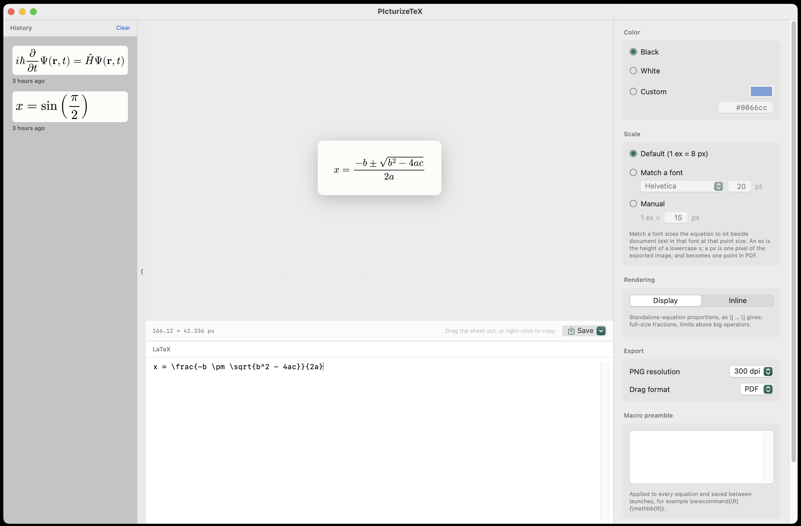
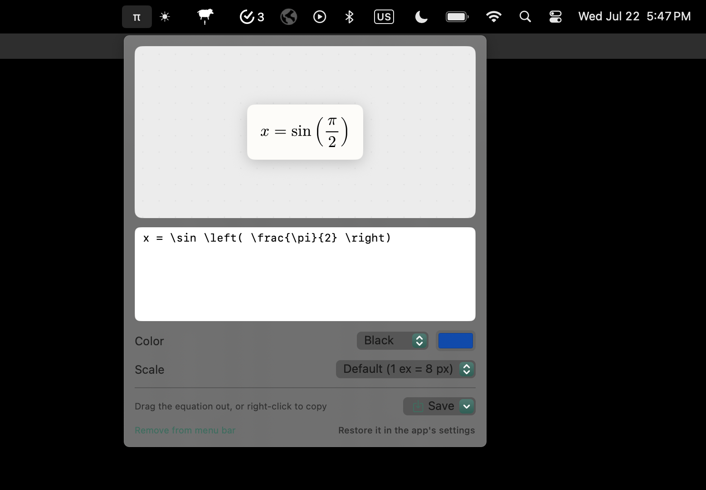

Type LaTeX. Get a picture.
Download for macOSFree & open source · macOS 14+ · Apple Silicon · or build from source

Rendered as you type, at the exact size it will export. Bad TeX never blanks your last good equation.
Pull the equation straight into Keynote, PowerPoint, Illustrator, or Finder as a file.
Right-click puts PDF, PNG, and SVG on the clipboard together — every app pastes the format it handles best.
Match a font at a point size so equations sit naturally beside your text, or set the scale by hand.
Every exported equation is kept with its source and settings — click to re-edit weeks later.
Typeset by a bundled MathJax 4. No account, no network, no telemetry.
A compact companion lives behind a π in the menu bar — input, preview, color and scale, drag-out and save — for quick equations from any app, even with the main window closed. Toggle it on or off in settings.

Download the zip, unzip it, and drag PIcturizeTeX.app into Applications.
First launch: this build isn’t notarized with Apple, so macOS asks you to approve it once:
Prefer not to run a downloaded binary? git clone the
repo and run ./Scripts/bundle.sh — it builds in about a minute with
just the Xcode Command Line Tools.